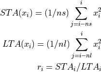
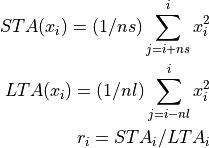
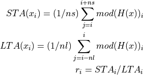
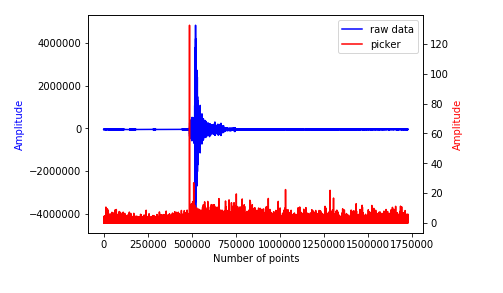

pycheron.sigpro.STALTA¶
-
STALTA(tr, staSecs=3, ltaSecs=30, algorithm='classic_LR', increment=1, demean=True, detrend=True, taper=0, logger=None, fortran=False)[source]¶ The STALTA method applies one of several STA/LTA “first break picking” algorithms to obspy trace data in order to automatically detect seismic events.
Parameters: - tr (obspy.core.trace.Trace) – obspy trace object
- staSecs (int) – length of the short averaging window in secs
- ltaSecs (int) – length of long averaging window in secs
- algorithm (str) – algorithm to be used. Options include
classic_LR,classic_RR, andEarleAndShearer_envelope - increment (str) – the increment to use when sliding the averaging windows to the next location. Note for higher resolution channels, picking an increment of 2/sampling rate can greatly speed up processing times and still generate reasonable results.
- demean (bool) – boolean flag determining whether to demean the data before applying the algorithm
- detrend (bool) – boolean flag determining whether to detrend the data before applying the algorithm
- taper (int) – proportion of the signal to be tapered at each end before applying the algorithm
- logger (pycheron.util.logger.Logger) – logger object
- fortran (bool) – Use Fortran libs or not. If libs will not compile or on a Windows Machine, set to False
Returns: Matrix of values of the same length as the data in tr. Note the returned vector will contain NaNs near the edges of the trace where insufficient data are available to fill windows. Additional NaN values will appear for every index that is skipped over when the increment parameter is greater than 1.
Return type: numpy.array
By default, this method uses the
"classic_LR"algorithm which calculates the average power in the trace data over a short window (STA) and a long window (LTA). With this algorithm, windows are “left/right aligned” meaning that the point for which STA/LTA is calculated is at the lefttmost edge of the STA window and the rightmost edge of the LTA window. The resulting STA/LTA ratio thus has the same number of points as the original data. This is a standard method of “first break picking” and can be used to identify the onset of a seismic event. [1] [2] [3]Methodology
algorithm = "classic_RR". This is the original STA/LTA algorithm with “right alignment” [4]

[---------- LTA ---------*] [-- STA -*]
algorithm = "classic_LR"(default). This algorithm has the index at the left edge of the STA window and the right edge of the LTA window. [5]

[---------- LTA --------*] [*- STA --]
algorithm = "EarleAndShearer_envelope"[6]

where: H(x) is the hilbert transform of the data and mod(H(x)) is the ‘envelope’ of the seismic signal
[---------- LTA ---------*] [*- STA --]
Note
Because the Hilbert transform involves performing an FFT of the data it can take significantly longer than the “classic” algorithms for longer seismic signals (>500,000 pts)}
Example
from obspy.clients.fdsn import Client from obspy import UTCDateTime from pycheron.sigpro.STALTA import STALTA #Instantiate client object client = Client("IRIS") #Grab data from 2010-02-27 to 2010-02-28 t = UTCDateTime("2010-02-27T00:00:00.000") st = client.get_waveforms("IU","ANMO","00","BHZ",t,t+1440*60) tr = st[0] picker = STALTA(tr,3,30)
Plotting
import matplotlib.pyplot as plt # Plot the trace and overlay the picker (on separate axes for easier viewing) fig, ax1 = plt.subplots() # Uses output from above example ln1 = ax1.plot(tr,color='blue', label = 'raw data') ax1.set_xlabel('Number of points') ax1.set_ylabel('Amplitude', color ='blue') # Create picker axis and plot ax2=ax1.twinx() # Uses output from above example ln2 = ax2.plot(picker, color = 'red', label = 'picker') ax2.set_ylabel('Amplitude', color = 'red') # Create combined legend lns = ln1+ln2 labs = [l.get_label() for l in lns] ax1.legend(lns,labs)
References
[1] First break picking: multi-purpose STA/LTA trigger algorithm, http://en.wikipedia.org/wiki/First_break_picking [2] “A Comparison of Select Trigger Algorithms for Automated Global Seismic Phase and Event Detection” http://citeseerx.ist.psu.edu/viewdoc/download?doi=10.1.1.116.245&rep=rep1&type=pdf [3] Wong, “Automatic time-picking of first arrivals on noisy microseismic data” http://www.crewes.org/ForOurSponsors/ConferenceAbstracts/2009/CSEG/Wong_CSEG_2009.pdf [4] Wong, GEOPHYSICS, VOL. 75, NO. 4 (JULY-AUGUST 2010); P. V67-V76 Automatic first-breaks picking: New strategies and algorithms”. http://www.fcaglp.unlp.edu.ar/~velis/papers/PickingGeop10.pdf [5] Wong, “Adaptive microseismic event detection and automatic time picking” http://www.cspg.org/documents/Conventions/Archives/Annual/2012/279_GC2012_Adaptive_Microseismic_Event_Detection.pdf [6] Earle and Shearer, “Characterization of Global Seismograms Using an Automatic-Picking Algorithm” Bulletin of the Seismological Society of America, Vol. 84, No. 2, pp. 366-376, April 1994